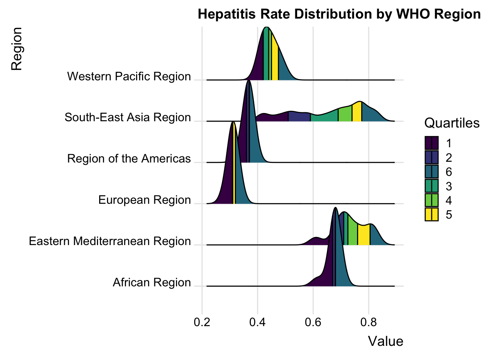
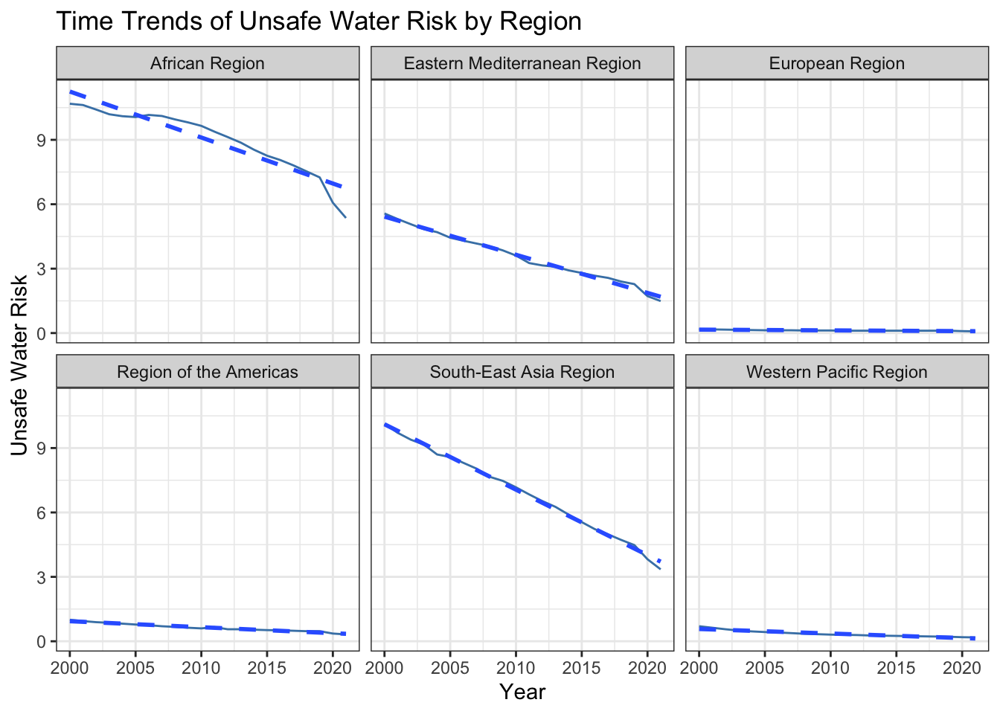
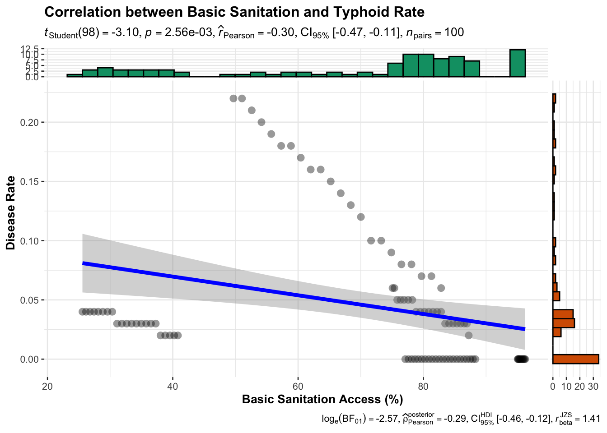
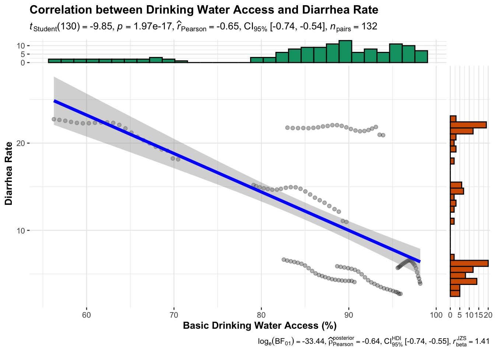
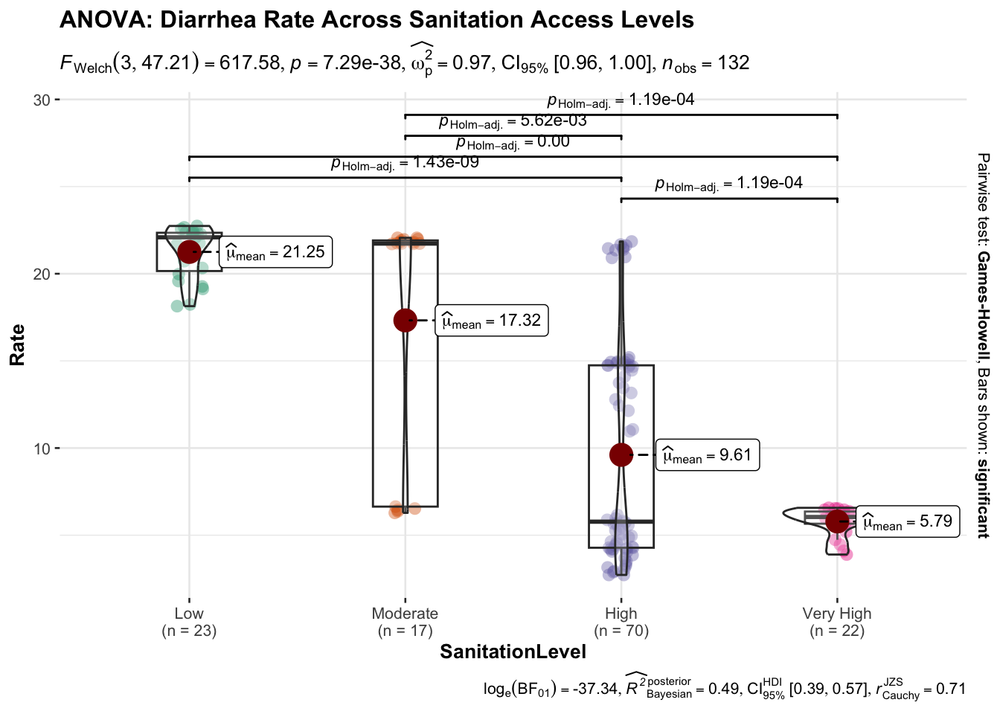

pacman::p_load(tidyverse,rt,dplyr,tidyr, readxl,writexl,ggplot2, ggcorrplot, ggstatsplot, GGally,
SmartEDA, easystats, gtsummary,
ggExtra,parallelPlot,ggdist, ggridges, ggthemes,
colorspace,lubridate, ggthemes, reactable,
reactablefmtr, gt, gtExtras)Confirmatory data analysis
1. Overview
The purpose of this analysis is to explore the relationship between water quality indicators and disease rates across different WHO regions. This study examines how access to basic water services, sanitation facilities, and other water-related indicators correlate with the prevalence of waterborne diseases such as typhoid, diarrhea, and hepatitis A. By understanding these relationships, we can identify potential interventions to reduce disease burden in affected regions.
2. Data Preparation
2.1 Install and launch R packages
2.2 Import Data
water_indicators <- read.csv("WDICountryData.csv")
file_path <- "data/WaterandDiseasebywhoregion.xlsx"2.3 Extract Data
all_sheets <- setNames(
lapply(excel_sheets(file_path), function(sheet) read_excel(file_path, sheet = sheet)),
excel_sheets(file_path)
)New names:
New names:
• `` -> `...9`
• `` -> `...10`
• `` -> `...11`
• `` -> `...12`typhoid <- all_sheets[["typhoid 2000 - 2021"]]
diarrhea <- all_sheets[["diarrheal diseases 2000 - 2021"]]
hepatitiesA <- all_sheets[[ "acute hepatitis A 2000 -2021" ]]
riskfactor <- all_sheets[[ "Risk factor" ]]2.4 Overview raw data
water_indicators %>%
ExpData(type = 2) Index Variable_Name Variable_Type Sample_n Missing_Count Per_of_Missing
1 1 Series.Name character 2662 3 0.001
2 2 Series.Code character 2660 5 0.002
3 3 Country.Name character 2660 5 0.002
4 4 Country.Code character 2660 5 0.002
5 5 Region character 2660 5 0.002
6 6 X2000..YR2000. character 2660 5 0.002
7 7 X2001..YR2001. character 2660 5 0.002
8 8 X2002..YR2002. character 2660 5 0.002
9 9 X2003..YR2003. character 2660 5 0.002
10 10 X2004..YR2004. character 2660 5 0.002
11 11 X2005..YR2005. character 2660 5 0.002
12 12 X2006..YR2006. character 2660 5 0.002
13 13 X2007..YR2007. character 2660 5 0.002
14 14 X2008..YR2008. character 2660 5 0.002
15 15 X2009..YR2009. character 2660 5 0.002
16 16 X2010..YR2010. character 2660 5 0.002
17 17 X2011..YR2011. character 2660 5 0.002
18 18 X2012..YR2012. character 2660 5 0.002
19 19 X2013..YR2013. character 2660 5 0.002
20 20 X2014..YR2014. character 2660 5 0.002
21 21 X2015..YR2015. character 2660 5 0.002
22 22 X2016..YR2016. character 2660 5 0.002
23 23 X2017..YR2017. character 2660 5 0.002
24 24 X2018..YR2018. character 2660 5 0.002
25 25 X2019..YR2019. character 2660 5 0.002
26 26 X2020..YR2020. character 2660 5 0.002
27 27 X2021..YR2021. character 2660 5 0.002
No_of_distinct_values
1 13
2 11
3 267
4 267
5 8
6 1856
7 1870
8 1886
9 1886
10 1894
11 1915
12 1940
13 1948
14 1973
15 1980
16 2004
17 2023
18 2041
19 2050
20 2054
21 2047
22 2044
23 2032
24 2008
25 1993
26 1965
27 1945typhoid %>%
ExpData(type = 2) Index Variable_Name Variable_Type Sample_n Missing_Count Per_of_Missing
1 1 Measure character 100 1 0.01
2 2 Metric character 100 1 0.01
3 3 Cause character 100 1 0.01
4 4 Location character 100 1 0.01
5 5 Age character 100 1 0.01
6 6 Sex character 100 1 0.01
7 7 Year numeric 100 1 0.01
8 8 Value numeric 100 1 0.01
9 9 Upper numeric 100 1 0.01
10 10 Lower numeric 100 1 0.01
No_of_distinct_values
1 2
2 2
3 2
4 6
5 2
6 2
7 22
8 21
9 27
10 19diarrhea %>%
ExpData(type = 2) Index Variable_Name Variable_Type Sample_n Missing_Count Per_of_Missing
1 1 Measure character 154 1 0.006
2 2 Metric character 154 1 0.006
3 3 Cause character 154 1 0.006
4 4 Location character 154 1 0.006
5 5 Age character 154 1 0.006
6 6 Sex character 154 1 0.006
7 7 Year numeric 154 1 0.006
8 8 Value numeric 154 1 0.006
9 9 Upper numeric 154 1 0.006
10 10 Lower numeric 154 1 0.006
No_of_distinct_values
1 2
2 2
3 2
4 8
5 2
6 2
7 22
8 137
9 139
10 141hepatitiesA %>%
ExpData(type = 2) Index Variable_Name Variable_Type Sample_n Missing_Count Per_of_Missing
1 1 easure character 134 1 0.007
2 2 Metric character 132 3 0.022
3 3 Cause character 132 3 0.022
4 4 Location character 132 3 0.022
5 5 Age character 132 3 0.022
6 6 Sex character 132 3 0.022
7 7 Year numeric 132 3 0.022
8 8 Value numeric 132 3 0.022
9 9 Upper numeric 132 3 0.022
10 10 Lower numeric 132 3 0.022
No_of_distinct_values
1 4
2 2
3 2
4 7
5 2
6 2
7 22
8 45
9 55
10 40riskfactor %>%
ExpData(type = 2) Index Variable_Name Variable_Type Sample_n Missing_Count Per_of_Missing
1 1 Measure character 154 1 0.006
2 2 Metric character 154 1 0.006
3 3 Risk character 154 1 0.006
4 4 Cause character 154 1 0.006
5 5 Location character 154 1 0.006
6 6 Age character 154 1 0.006
7 7 Sex character 154 1 0.006
8 8 Year numeric 154 1 0.006
9 9 Value numeric 154 1 0.006
10 10 Upper numeric 154 1 0.006
11 11 Lower numeric 154 1 0.006
12 12 ...12 logical 0 155 1.000
13 13 ...13 logical 0 155 1.000
14 14 ...14 character 9 146 0.942
15 15 ...15 numeric 6 149 0.961
No_of_distinct_values
1 2
2 2
3 2
4 2
5 8
6 2
7 2
8 22
9 135
10 134
11 116
12 0
13 0
14 10
15 62.5 Data Transformation
Remove the missing value
water_indicators[water_indicators == ".."] <- NA
water_indicators[water_indicators == "#N/A"] <- NA
water_indicators[water_indicators == ""] <- NAwater_indicators <- water_indicators[complete.cases(water_indicators[, 5:27]), ]riskfactor[riskfactor == " "] <- NA
riskfactor[riskfactor == "#N/A"] <- NA
riskfactor <- riskfactor[rowSums(is.na(riskfactor)) != ncol(riskfactor), ]
hepatitiesA[hepatitiesA == " "] <- NA
diarrhea[diarrhea == " "] <- NA
typhoid[typhoid == " "] <- NAriskfactor <- riskfactor[, 1:10]
hepatitiesA <- hepatitiesA[complete.cases(hepatitiesA), ]
diarrhea <- diarrhea[complete.cases(diarrhea), ]
typhoid <- typhoid[complete.cases(typhoid), ]Convert data type
water_indicators[6:27] <- lapply(water_indicators[6:27], function(x) as.numeric(as.character(x)))Reshape Data
water_indicators <- water_indicators %>%
pivot_longer(
cols = starts_with("X"),
names_to = "Year",
values_to = "Value"
)water_indicators <- water_indicators %>%
mutate(Year = gsub("X(\\d{4})\\.\\..*", "\\1", Year),
Year = as.numeric(Year),
Value = as.numeric(Value)) Keep consistent column names
typhoid <- typhoid %>% rename(Region = Location)
diarrhea <- diarrhea %>% rename(Region = Location)
hepatitiesA <- hepatitiesA %>% rename(Region = Location)
riskfactor <- riskfactor %>% rename(Region = Location)2.6 Data Integration
Group by regions
water_region <- water_indicators %>%
group_by(Region, Year, Series.Name) %>%
summarise(AvgValue = mean(Value, na.rm = TRUE), .groups = "drop")Typhoid <- typhoid %>%
select(Region, Year, TyphoidRate = Value)
Diarrhea <- diarrhea %>%
select(Region, Year, DiarrheaRate = Value)
HepatitisA <- hepatitiesA %>%
select(Region, Year, HepatitisRate = Value)
Risk <- riskfactor %>%
select(Region, Year, UnsafeRisk = Value)Merge disease data set
disease_combined <- reduce(
list(Typhoid, Diarrhea, HepatitisA, Risk),
~ full_join(.x, .y, by = c("Region", "Year"))
)Final data set assembly
merged_data <- left_join(disease_combined, water_region, by = c("Region", "Year"))merged_data <- merged_data[, !names(merged_data) %in%
"People with basic handwashing facilities including soap and water (% of population)"]
merged_data <- merged_data[merged_data$Region != "WHO region", ]merged_data <- merged_data %>%
filter(!is.na(Year)) %>%
mutate(Year = as.numeric(Year))2.7 Overview final data set
glimpse(merged_data)Rows: 1,232
Columns: 8
$ Region <chr> "Region of the Americas", "Region of the Americas", "Reg…
$ Year <dbl> 2000, 2000, 2000, 2000, 2000, 2000, 2000, 2000, 2000, 20…
$ TyphoidRate <dbl> 0, 0, 0, 0, 0, 0, 0, 0, 0, 0, 0, 0, 0, 0, 0, 0, 0, 0, 0,…
$ DiarrheaRate <dbl> 5.88, 5.88, 5.88, 5.88, 5.88, 5.88, 5.88, 5.88, 5.88, 5.…
$ HepatitisRate <dbl> 0.38, 0.38, 0.38, 0.38, 0.38, 0.38, 0.38, 0.38, 0.38, 0.…
$ UnsafeRisk <dbl> 1.00, 1.00, 1.00, 1.00, 1.00, 1.00, 1.00, 1.00, 1.00, 0.…
$ Series.Name <chr> "Level of water stress: freshwater withdrawal as a propo…
$ AvgValue <dbl> 1.308801e+01, 8.252346e+00, 8.867545e+01, 7.710693e+01, …3. Data Exploration
This section will explore the distribution patterns of disease rates across WHO regions to gain initial insights into regional variations
3.1 Distribution of Disease Rates by Region
Distribution of Typhoid Rates by WHO Region
ggplot(typhoid,
aes(x = Value,
y = Region)) +
geom_density_ridges(
scale = 3,
rel_min_height = 0.01,
bandwidth = 0.01,
fill = lighten("#7097BB", 0.3),
color = "white"
) +
scale_x_continuous(
name = "Typhoid Rate",
expand = c(0, 0)
) +
scale_y_discrete(
name = NULL,
expand = expansion(add = c(0.2, 2.6))
) +
theme_ridges() +
labs(title = "Distribution of Typhoid Rates by WHO Region")Distribution of Typhoid Rates by WHO Region-Raincloud Plot
ggplot(diarrhea,
aes(x = Region,
y = Value)) +
stat_halfeye(
adjust = 0.9,
justification = -0.25,
.width = 0,
point_colour = NA,
fill = "#7097BB"
) +
geom_boxplot(
width = 0.15,
outlier.shape = NA,
alpha = 0.6
) +
stat_dots(
side = "left",
justification = 2.2,
binwidth = 0.08,
dotsize = 2.2,
color = "#7097BB",
alpha = 0.9
) +
coord_flip() +
theme_economist() +
labs(
title = "Diarrhea Rates by WHO Region"
)Distribution of Hepatitis A by WHO Region-Quantile Distribution
ggplot(hepatitiesA,
aes(x = Value,
y = Region,
fill = factor(stat(quantile)))) +
stat_density_ridges(
geom = "density_ridges_gradient",
calc_ecdf = TRUE,
quantiles = 6,
quantile_lines = TRUE,
scale = 2,
alpha = 0.9
) +
scale_fill_viridis_d(name = "Quartiles") +
labs(
title = "Hepatitis Rate Distribution by WHO Region"
) +
theme_ridges()Warning: `stat(quantile)` was deprecated in ggplot2 3.4.0.
ℹ Please use `after_stat(quantile)` instead.Picking joint bandwidth of 0.0208
Ridge Density Plots It Shows disease rates distribution across WHO regions Advantage and is easier to compare regions and see data spread
Rain-cloud Plots It Combines density, boxplot, and points in one plot Advantage which Shows the complete data picture in single view
Quantile Distribution Plots By using colors to show different data levels to makes it easy to see where most values are located
3.2 Time Trend Analysis
Trend of Diarrhea Rate Over Time by Region
trend_data1 <- merged_data %>%
filter(!is.na(DiarrheaRate)) %>%
group_by(Region, Year) %>%
summarise(mean_disease = mean(DiarrheaRate, na.rm = TRUE), .groups = "drop")ggplot(trend_data1, aes(x = Year, y = mean_disease, color = Region)) +
geom_line(size = 1) +
geom_smooth(method = "lm", se = FALSE, linetype = "dashed") +
labs(title = "Trend of Diarrhea Rate Over Time by Region",
y = "Mean Diarrhea Rate (%)",
x = "Year") +
theme_minimal()Warning: Using `size` aesthetic for lines was deprecated in ggplot2 3.4.0.
ℹ Please use `linewidth` instead.`geom_smooth()` using formula = 'y ~ x'Trends of Unsafe Water Risk by Region
trend_data2 <- merged_data %>%
filter(!is.na(UnsafeRisk)) %>%
group_by(Region, Year) %>%
summarise(mean_disease = mean(UnsafeRisk, na.rm = TRUE), .groups = "drop")
ggplot(trend_data2, aes(x = Year, y = mean_disease)) +
geom_line(color = "steelblue") +
geom_smooth(method = "lm", se = FALSE, linetype = "dashed") +
facet_wrap(~ Region) +
labs(title = "Time Trends of Unsafe Water Risk by Region",
y = "Unsafe Water Risk",
x = "Year") +
theme_bw()`geom_smooth()` using formula = 'y ~ x'
Line Plots with Trend Lines It can easier to see if disease is increasing or decreasing over time
Faceted Time Series Shows separate time trends for each region which may allow to compare different regions’ patterns clearly
4. Correlation Analysis
In this sector, we will quantify the relationships between water indicators and disease rates.
Basic sanitation access vs Typhoid Rate
filtered_corr_data <- merged_data %>%
filter(`Series.Name` == "People using at least basic sanitation services (% of population)")
ggscatterstats(
data = filtered_corr_data,
x = AvgValue,
y = TyphoidRate,
xlab = "Basic Sanitation Access (%)",
ylab = "Disease Rate",
title = "Correlation between Basic Sanitation and Typhoid Rate",
marginal = TRUE
)Registered S3 method overwritten by 'ggside':
method from
+.gg GGally`stat_xsidebin()` using `bins = 30`. Pick better value with `binwidth`.
`stat_ysidebin()` using `bins = 30`. Pick better value with `binwidth`.
Basic drinking Water Access vs Diarrhea Rate
df_plot1 <- merged_data %>%
filter(Series.Name == "People using at least basic drinking water services (% of population)")
"DiarrheaRate"[1] "DiarrheaRate"ggscatterstats(
data = df_plot1,
x = AvgValue,
y = DiarrheaRate,
marginal = TRUE,
xlab = "Basic Drinking Water Access (%)",
ylab = "Diarrhea Rate",
title = "Correlation between Drinking Water Access and Diarrhea Rate",
point.args = list(alpha = 0.3)
)`stat_xsidebin()` using `bins = 30`. Pick better value with `binwidth`.
`stat_ysidebin()` using `bins = 30`. Pick better value with `binwidth`.
This analysis examines the relationships between water indicators and disease rates by using a visualization that combines scatter plots, marginal distributions, and statistical tests. The key advantage of this approach is that it provides a comprehensive view of the correlation in a single plot, allowing for both visual interpretation and statistical validation of the relationship between variables.
5. ANOVA Analysis
To further understand how disease rates vary across different categories and conditions, we employ Analysis of Variance to the following.
Sanitation Levels Across Different Diseases level
basic_sanitation_data <- merged_data %>%
filter(Series.Name == "People using at least basic sanitation services (% of population)") %>%
select(Region, Year, AvgValue, TyphoidRate, DiarrheaRate, HepatitisRate, UnsafeRisk)
basic_sanitation_data <- basic_sanitation_data %>%
mutate(
TyphoidCategory = ifelse(TyphoidRate > median(TyphoidRate, na.rm = TRUE), "High Typhoid", "Low Typhoid"),
DiarrheaCategory = ifelse(DiarrheaRate > median(DiarrheaRate, na.rm = TRUE), "High Diarrhea", "Low Diarrhea"),
HepatitisCategory = ifelse(HepatitisRate > median(HepatitisRate, na.rm = TRUE), "High Hepatitis", "Low Hepatitis"),
UnsafeCategory = ifelse(UnsafeRisk > median(UnsafeRisk, na.rm = TRUE), "High Unsafe Water Risk", "Low Unsafe Water Risk")
)
long_data <- basic_sanitation_data %>%
tidyr::pivot_longer(
cols = c(TyphoidCategory, DiarrheaCategory, HepatitisCategory, UnsafeCategory),
names_to = "DiseaseType",
values_to = "DiseaseLevel"
) %>%
filter(!is.na(DiseaseLevel), !is.na(AvgValue)) # Remove NA
ggbetweenstats(
data = long_data,
x = DiseaseLevel,
y = AvgValue,
grouping.var = DiseaseType, # Group by disease type
type = "parametric",
title = "Basic Sanitation Levels Across Disease Categories",
xlab = "Disease Prevalence Level",
ylab = "Sanitation Level (% using basic services)",
messages = FALSE
)Number of labels is greater than default palette color count.
• Select another color `palette` (and/or `package`).Diarrhea Rate Across Sanitation Access Levels
long_data <- merged_data %>%
tidyr::pivot_longer(
cols = c(TyphoidRate, DiarrheaRate, HepatitisRate, UnsafeRisk),
names_to = "Disease",
values_to = "Rate"
)
diarrhea_sanitation <- long_data %>%
filter(Disease == "DiarrheaRate",
`Series.Name` == "People using at least basic sanitation services (% of population)")
diarrhea_sanitation <- diarrhea_sanitation %>%
mutate(SanitationLevel = cut(
AvgValue,
breaks = c(0, 50, 70, 90, 100),
labels = c("Low", "Moderate", "High", "Very High"),
right = FALSE
))
ggbetweenstats(
data = diarrhea_sanitation,
x = SanitationLevel,
y = Rate,
type = "parametric",
title = "ANOVA: Diarrhea Rate Across Sanitation Access Levels"
)
This analysis compares disease rates under different levels of water access to understand how access affects public health. By testing the differences between groups, the plot shows the disparities clearly, while also presenting the data distribution, group means, and confidence intervals. It helps provide both statistical insight and visual summary.
6. Bullet Dashboard
For Water Indicators(Basic Sanitation Access)
selected_indicator <- "People using at least basic sanitation services (% of population)"
water_summary_all_regions <- merged_data %>%
filter(`Series.Name` == selected_indicator) %>%
group_by(Region) %>%
summarise(
Min = min(AvgValue, na.rm = TRUE),
Max = max(AvgValue, na.rm = TRUE),
Average = round(mean(AvgValue, na.rm = TRUE), 1),
Monthly = list(AvgValue[order(Year)]),
Actual = mean(AvgValue[Year == 2021], na.rm = TRUE),
Target = 100,
.groups = "drop"
)
water_summary_all_regions %>%
gt() %>%
gt_plt_sparkline(Monthly, type = "default") %>% # <-- FIXED HERE
gt_plt_bullet(column = Actual,
target = Target,
width = 28,
palette = c("lightblue", "black")) %>%
gt_theme_espn()| Region | Min | Max | Average | Monthly | Actual |
|---|---|---|---|---|---|
| African Region | 25.57927 | 40.81990 | 33.1 | ||
| Eastern Mediterranean Region | 75.07503 | 87.23594 | 81.2 | ||
| European Region | 95.04635 | 97.32400 | 96.2 | ||
| Region of the Americas | 77.10693 | 88.31167 | 82.8 | ||
| South-East Asia Region | 49.68674 | 82.82827 | 66.1 | ||
| Western Pacific Region | 67.48494 | 81.08612 | 74.4 |
For Disease Variable(Diarrhea Rate)
selected_disease_column <- "DiarrheaRate"
disease_summary_all_regions <- merged_data %>%
filter(!is.na(.data[[selected_disease_column]])) %>%
group_by(Region) %>%
summarise(
Min = min(.data[[selected_disease_column]], na.rm = TRUE),
Max = max(.data[[selected_disease_column]], na.rm = TRUE),
Average = round(mean(.data[[selected_disease_column]], na.rm = TRUE), 1),
Monthly = list(.data[[selected_disease_column]][order(Year)]),
Actual = mean(.data[[selected_disease_column]][Year == 2021], na.rm = TRUE),
Target = 0,
.groups = "drop"
)
disease_summary_all_regions %>%
gt() %>%
gt_plt_sparkline(Monthly, type = "default") %>%
gt_plt_bullet(column = Actual,
target = Target,
width = 28,
palette = c("salmon", "black")) %>%
gt_theme_espn()| Region | Min | Max | Average | Monthly | Actual |
|---|---|---|---|---|---|
| African Region | 18.14 | 22.74 | 21.2 | ||
| Eastern Mediterranean Region | 10.96 | 15.20 | 13.9 | ||
| European Region | 3.89 | 6.57 | 5.8 | ||
| Region of the Americas | 2.72 | 5.88 | 4.2 | ||
| South-East Asia Region | 20.91 | 22.06 | 21.7 | ||
| Western Pacific Region | 4.07 | 6.64 | 5.1 |
The dashboard shows current value, target, historical trend, and min,max values all in one view - For sanitation access, we can see which regions are close to 100% target and which ones need more improvement.The sparkline shows if region is getting better over time. - For diarrhea rate, we want to reach 0% target. The bullet chart shows how far each region is from this goal, and sparkline shows if disease rate is decreasing over time.